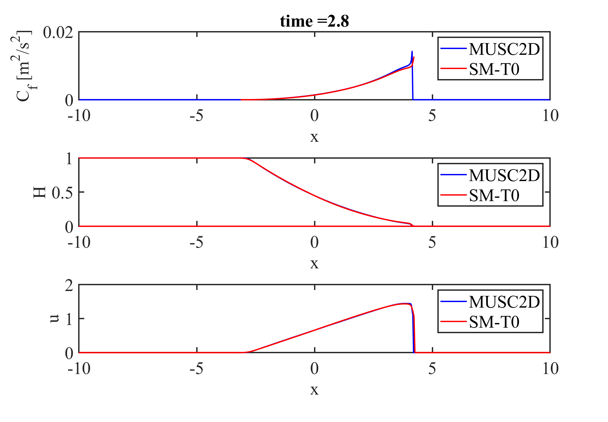

Software
Open-source code developed for my research, free to download and use.
A second-order finite-volume solver for the two-dimensional shallow water equations, written in MATLAB. It includes a ready-to-run example of a dam-break wave propagating over a smooth, flat, dry bed, validated against a reference solution.

To run the example: unzip, set the folder as the MATLAB current folder and run MUSCL_SWE_2D.m. See README.txt for the main parameters.